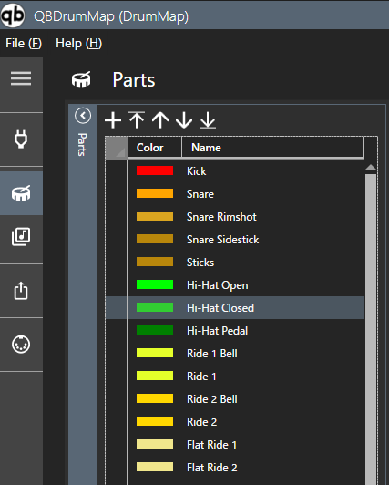
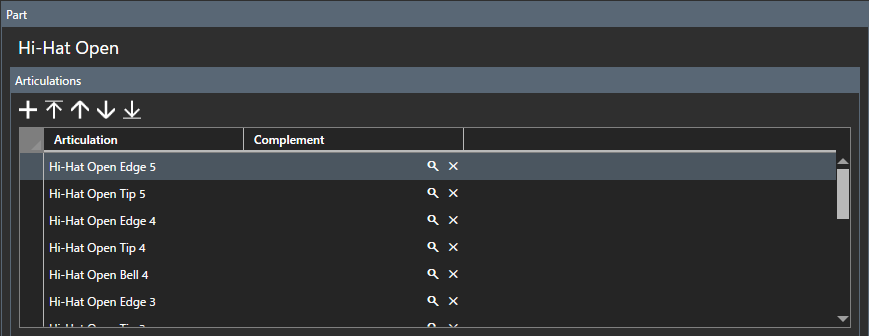

Parts
Drum-Parts und Artikulationen bearbeiten.
Drum-Parts bearbeiten

- Wählen Sie einen Part aus der Parts-Liste aus. Wenn das Teil nicht vorhanden ist, fügen Sie es hinzu.
- Nehmen Sie Einstellungen in der Artikulationsliste vor.
Artikulationsliste Registrieren Sie die im

-Teil verwendeten Artikulationen.
- Name
- Geben Sie den Artikulationsnamen ein.
- Alternative Artikulation
- Verwenden Sie diese angegebene Artikulation, wenn in der Drum-Map keine Artikulation verwendet wird.
Score Stellen Sie die Score-Anzeige für den
-Teil ein. Klicken Sie auf den Kopfbereich der Partitur, um sie zu öffnen/schließen. Wenn Sie die Drum-Score-Funktion nicht benötigen, können Sie die Standardwerte unverändert lassen.

Um die Cubase-Partitur festzulegen, müssen Sie das Cubase-Installationsziel auf dem Einstellungsbildschirm festlegen.